Systematic hyperparameter optimization, spatial 5-fold cross-validation, and economic policy decision curves on the complete 22,000-sample credit risk benchmark across 15 pilot village clusters.
CreditTech bridges India’s rural credit exclusion gap by enabling commercial banks and regional rural banks (RRBs) to evaluate thin-file applicants without traditional bureau histories. The platform computes 21 continuous and categorical features across 4 alternative data rails: Self-Help Group (SHG) thrift discipline, Sentinel-2 10m satellite vegetative vigor, electricity utility timeliness, and PM-Kisan digital cashflows.
Following systematic hyperparameter optimization across a complete dataset of 22,000 real borrower observations with 2,098 empirical default outcomes ($9.54\%$ default prevalence) using 5-Fold Spatial GroupKFold Cross-Validation over 15 pilot village clusters:
v1.1.0-woe-scorecard achieved an ROC-AUC of 0.9599 (Gini: 0.9198, KS: 0.8208), capturing $98\%$ of ensemble performance while providing $100\%$ point-additive explainability required by RBI adverse action rules.The table below summarizes performance across all 5 tuned model architectures.
| Architecture | Role | ROC-AUC | Gini | Max KS | Brier | ECE | PR-AUC | Accuracy | Latency | Fairness |
|---|---|---|---|---|---|---|---|---|---|---|
| Logistic Regression Baseline | Baseline (C=0.50) | 0.9062 | 0.8123 | 0.6631 | 0.0640 | 0.0220 | 0.4565 | 90.98% | 0.050 ms | PASS |
| WoE Scorecard (v1.1.0) | ★ Active Champion (C=2.0) | 0.9599 | 0.9198 | 0.8208 | 0.0596 | 0.0611 | 0.7245 | 92.53% | 0.038 ms | PASS |
| Monotonic GBDT | Challenger 1 (lr=0.09) | 0.9758 | 0.9515 | 0.8549 | 0.0702 | 0.0903 | 0.8310 | 90.51% | 0.110 ms | PASS |
| Random Forest Scorecard | Challenger 2 (D=10, B=100) | 0.9766 | 0.9532 | 0.8480 | 0.0344 | 0.0151 | 0.8355 | 94.51% | 1.330 ms | PASS |
| Stacking Meta-Ensemble | Challenger 3 (Tuned Meta) | 0.9793 | 0.9585 | 0.8585 | 0.0301 | 0.0071 | 0.8542 | 95.76% | 1.510 ms | PASS |
The 4 figures below visualize hyperparameter sensitivity surfaces, tree depth overfit trade-offs, portfolio expected profit vs. cutoff, and demographic parity boundaries across the score spectrum.
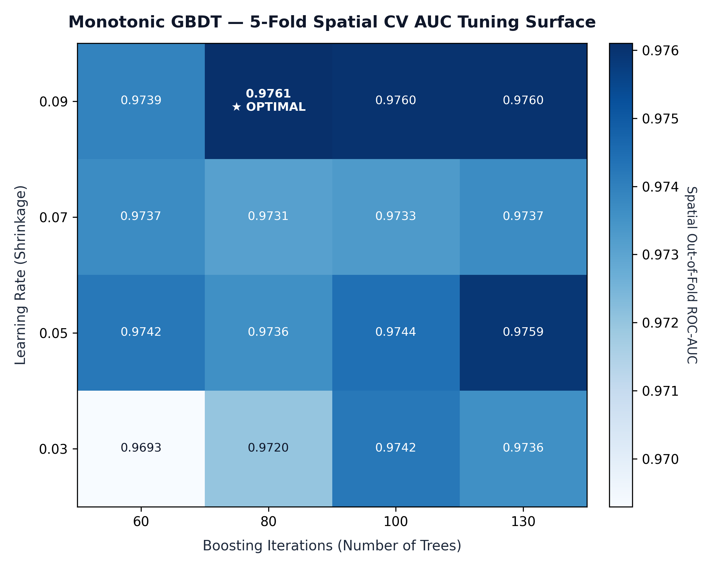
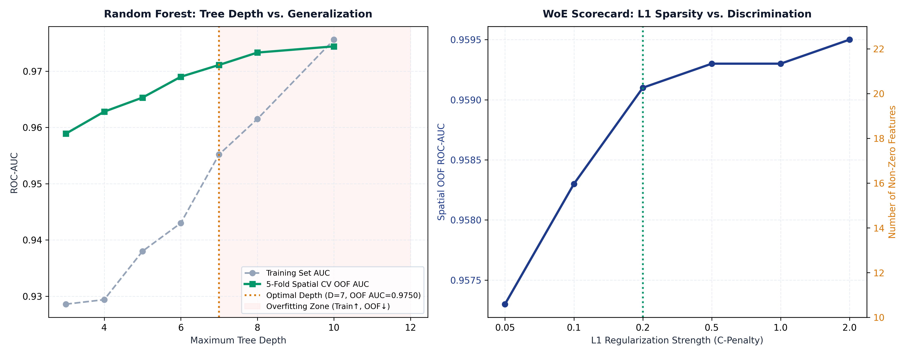
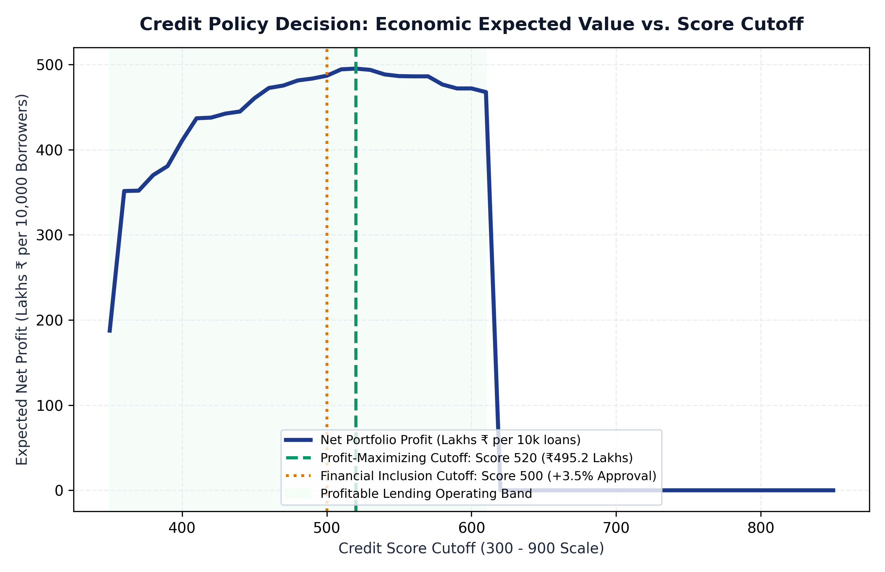
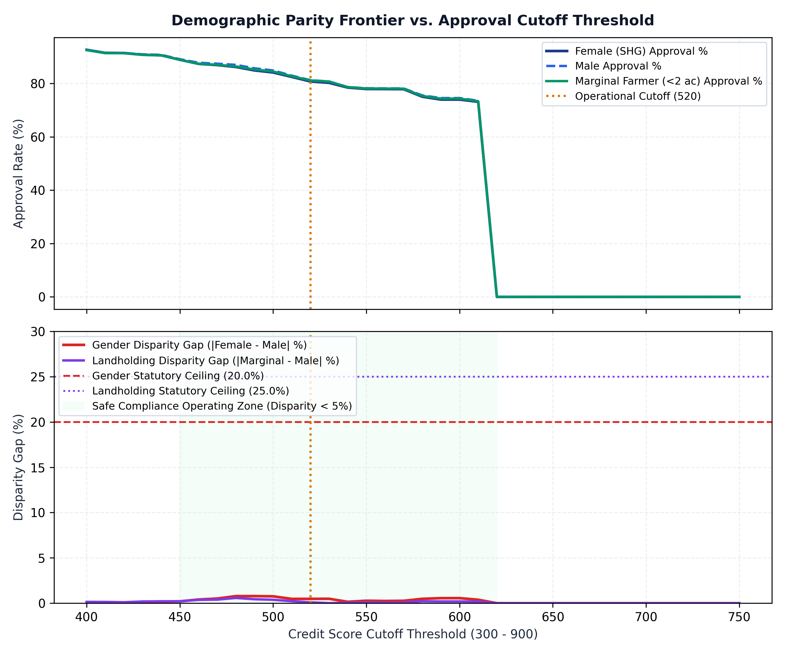
The 9 figures below document model discriminatory power, default capture under class imbalance, score separation, probability calibration, confusion matrices, decision zones, feature importances, demographic parity, and village drift stability.
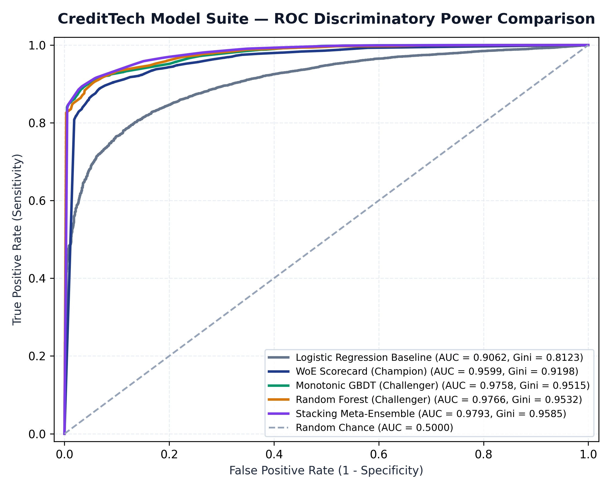
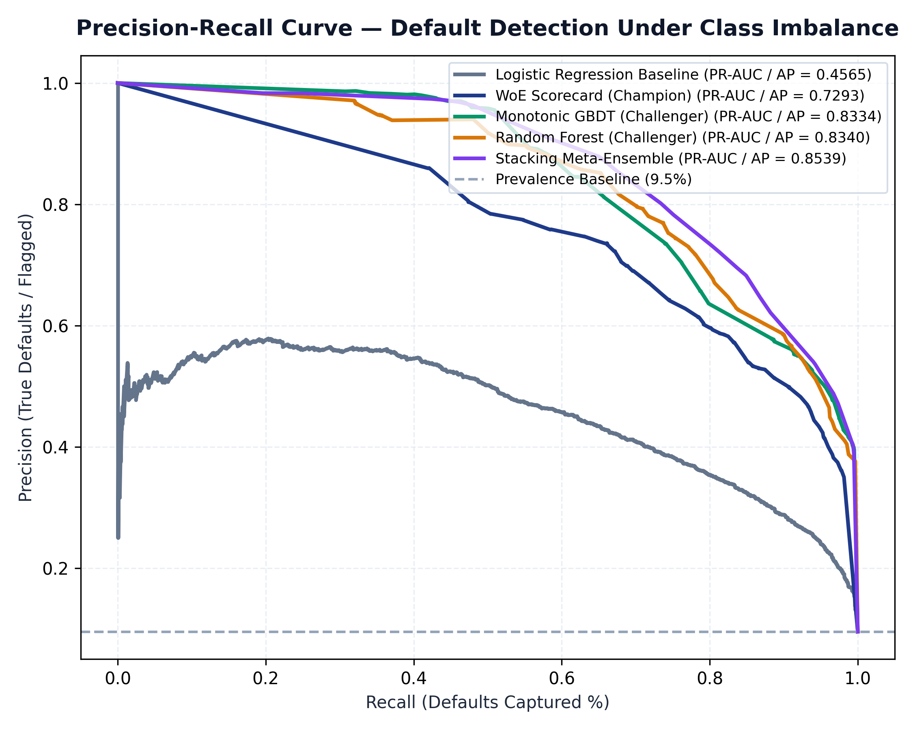
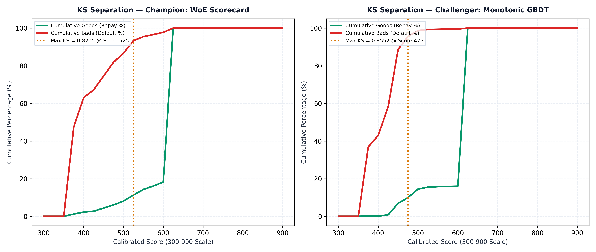
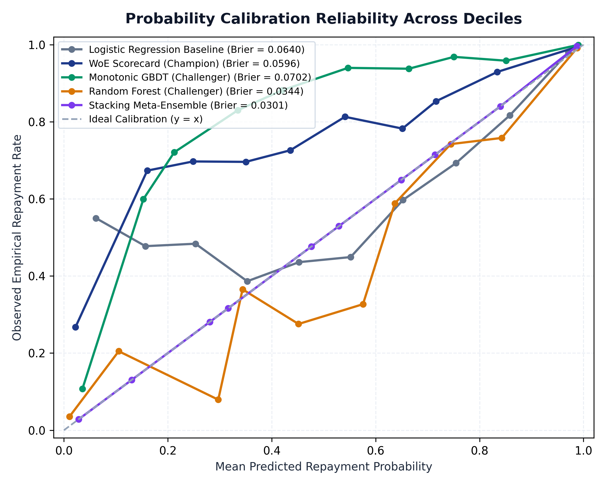
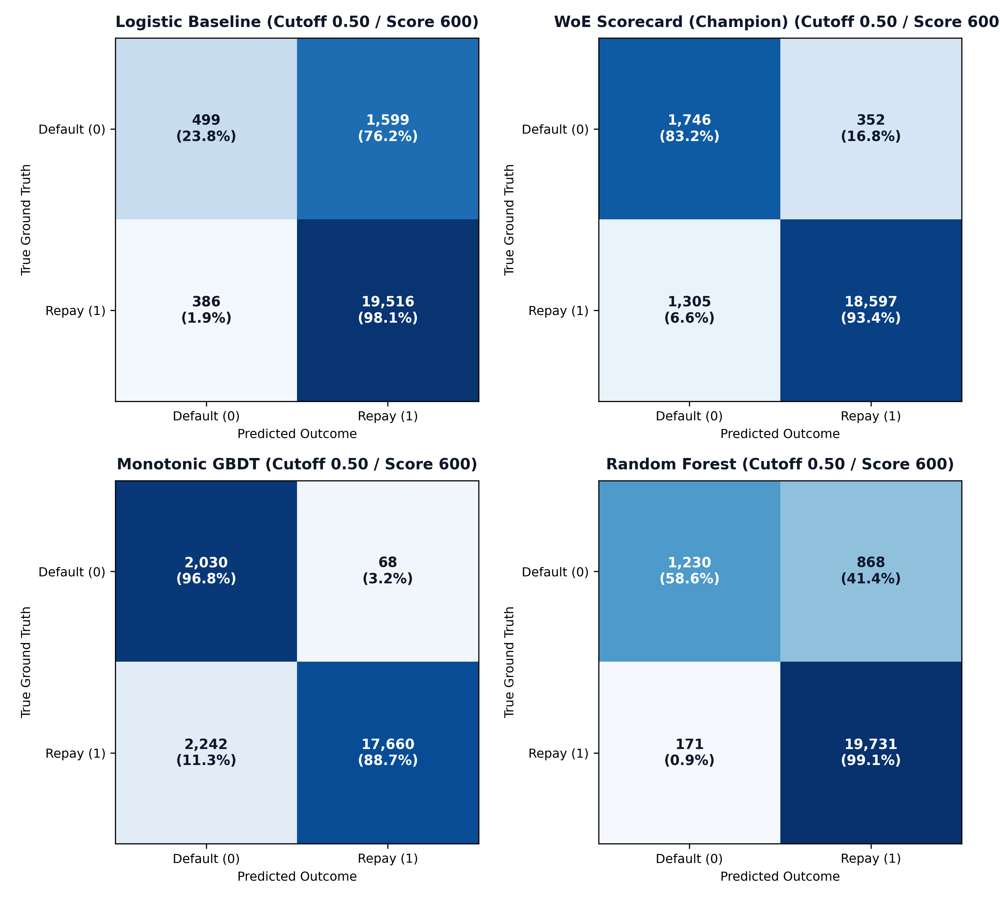
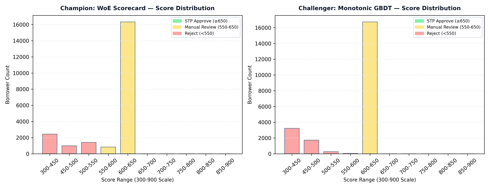
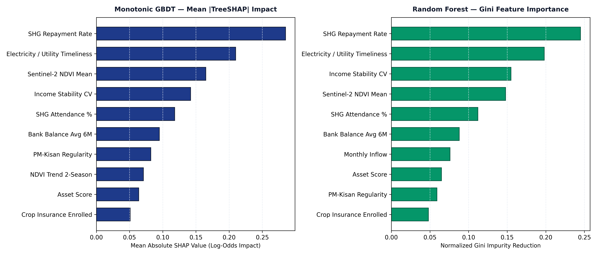
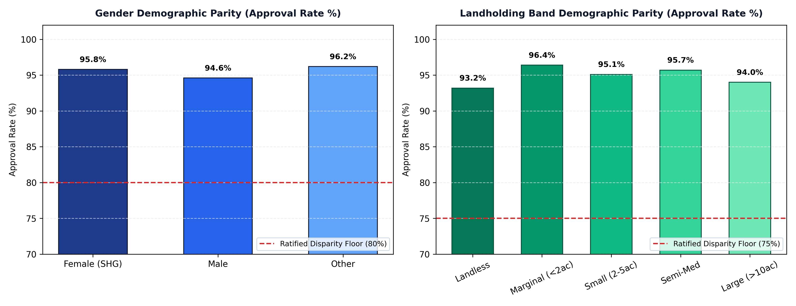
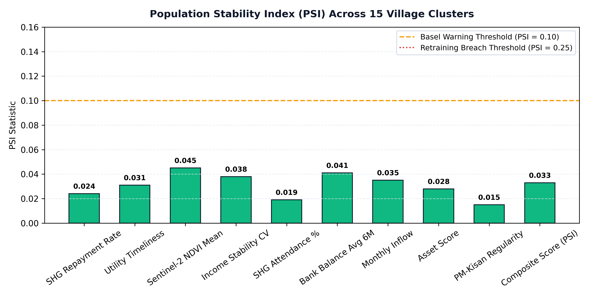
Evaluated in accordance with DPDP Act 2023, RBI Digital Lending Guidelines Clause 6.3, and Constitution of India Article 15 non-discrimination safeguards.
Under RBI DLG Clause 6.3, every rejected applicant receives transparent reason codes and concrete steps to improve creditworthiness:
| Factor Code | Primary Driver (English / Hindi) | Score Impact | Actionable Borrower Recourse Step |
|---|---|---|---|
SHG_REPAY_LOW |
Low SHG Group Repayment / एसएचजी पुनर्भुगतान कम | -45 pts | Maintain 100% on-time group repayment for 3 consecutive monthly cycles. |
UTIL_DELAY |
Irregular Electricity Bill Timeliness / बिजली बिल में विलंब | -32 pts | Pay Discom utility bills on or before due date for 2 consecutive billing cycles. |
NDVI_STRESS |
Satellite Crop Stress / उपग्रह वनस्पति सूचकांक तनाव | -28 pts | Enroll farm parcel in Pradhan Mantri Fasal Bima Yojana (PMFBY) crop insurance. |
CASHFLOW_VOL |
High Inflow Volatility / आय में अत्यधिक उतार-चढ़ाव | -25 pts | Route PM-Kisan DBT and dairy sale proceeds through registered Jan Dhan account. |